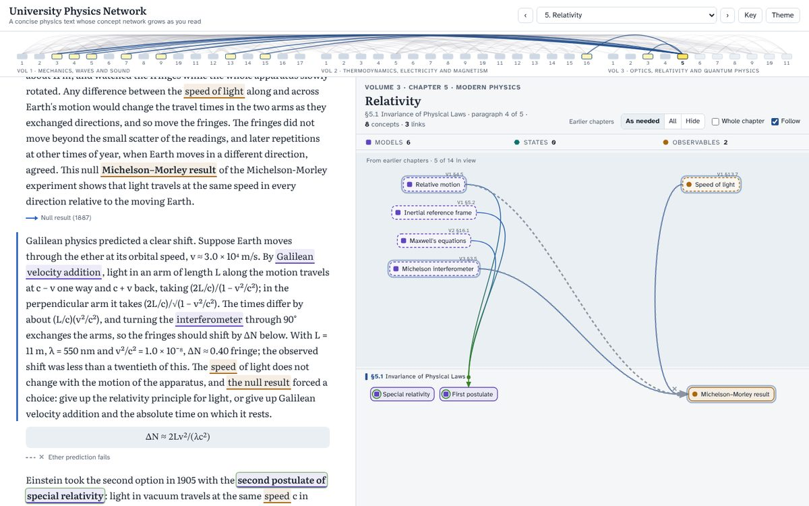

A university physics course as a growing concept graph
University Physics Network
A concise calculus-based physics course whose concept graph grows beside the text as you read. Every quantity, law and mathematical structure appears at the paragraph that introduces it; every connection appears at the paragraph that explains it. Click a coloured word, a node or an edge, and its explanation opens together with the paragraph that introduces it.
Science starts from observations of observables. They hint at the state of a system: a point, a vector, a field, a distribution. Observing, hypothesising and checking against new observations turns hypotheses into models. A model gives the observable outcomes for a given state, and the dynamical evolution of states. Layering observables, states and models, and labelling each edge with the mathematical step that establishes it, reduces a large body of physical modelling to edges that can be checked one at a time.
The Great Epistemic Network project uses this structure to make a field easy to review and to visualise. It also aims to automate the generation of research ideas: an edge that is missing or unverified is a candidate question. GEN Learning applies it to teaching. A student reading a first course sees how each new idea rests on earlier ones, which earlier chapters a chapter actually uses, and where classical reasoning fails and relativity or quantum theory takes over.
Observable: what is measuredModel: a law or mathematical structureState: what describes the systemAND: inputs needed togetherOR: alternative routes
Versions
Both versions stay online. A switcher at the bottom left of each page moves between them.
A text of 620 paragraphs (about 80 000 words) covering 44 chapters and 314 sections, with the graph beside it. Scrolling drives the growth of the graph. Earlier-chapter concepts appear only when a link in the current chapter uses them. Cards for concepts and links show the paragraph that introduces them, the other paragraphs that discuss them, and where they come from.
The same network, stepped through concept by concept and chapter by chapter, with links out to each OpenStax section and a book map of which chapters feed which. It has no reading text on the page; v2 was built because the network should grow while the text is read.
1024book key terms: 915 drawn as concepts, 40 matched to another section, 69 not drawn with reasons

Relativity (Vol. 3, §5.1): the Galilean prediction for the Michelson–Morley experiment is drawn as a broken grey link, and the second postulate enters as a relativistic concept (green ring).
Link kinds: 411 classical, 8 relativistic, 23 quantum, 13 from classical to relativistic, 38 into quantum theory, 17 back to classical as a limit, and 6 failed classical predictions. The failed predictions are:
equipartition and the heat capacity of hydrogen (Vol. 2 §2.3);
Galilean velocity addition against the Michelson–Morley result (Vol. 3 §5.1);
the ultraviolet catastrophe (§6.1);
the wave picture of the photoelectric effect (§6.2);
the collapsing planetary atom (§6.4);
the impenetrable classical barrier (§7.6).
The book and the text
The course follows the structure of OpenStax University Physics, Volumes 1–3, by Samuel J. Ling, Jeff Sanny and William Moebs (OpenStax, Rice University). The book supplies the chapters and sections, the key terms of each section, and the order in which they first appear. Every concept is placed in the section where the book introduces it, and a compiler checks the placement.
The reading text of v2 is written for this site and does not reproduce OpenStax wording. It introduces exactly the network's concepts in the book's order; each section links to its OpenStax page for figures, worked examples and problems. Rules checked by script:
every section has text;
a paragraph links every concept it introduces, and the target of every link it introduces;
no paragraph refers to a concept before it is introduced;
the network records are identical to the network source.
AI-generated content. The text, the descriptions of concepts and links, and the pages were produced with AI assistance (Claude, Anthropic). Five independent AI reviewers checked the physics of the text and recomputed every worked number; they found no definite errors and flagged 13 imprecisions, which were corrected. The text has not yet had a full human review. Corrections and additions are welcome as issues or pull requests.
chapters, sections, page links and key terms extracted from the OpenStax source (no definitions)
page/, scripts/, docs/
page templates, extraction, compilers, checkers, page builds and headless tests; the writing specification and the reader design
The repository README has the rebuild commands and the change log, including the network corrections made in v2.
Licence and citation
The text, network data and descriptions are an adaptation of OpenStax University Physics and are shared under CC BY-NC-SA 4.0, the book's licence. The code (page HTML/JavaScript, assets/, scripts/) is under the MIT licence. See LICENSE and CITATION.cff.
OpenStax credit: University Physics, Volumes 1–3, senior contributing authors Samuel J. Ling (Truman State University), Jeff Sanny (Loyola Marymount University), William Moebs; OpenStax, Rice University. Access for free at openstax.org.